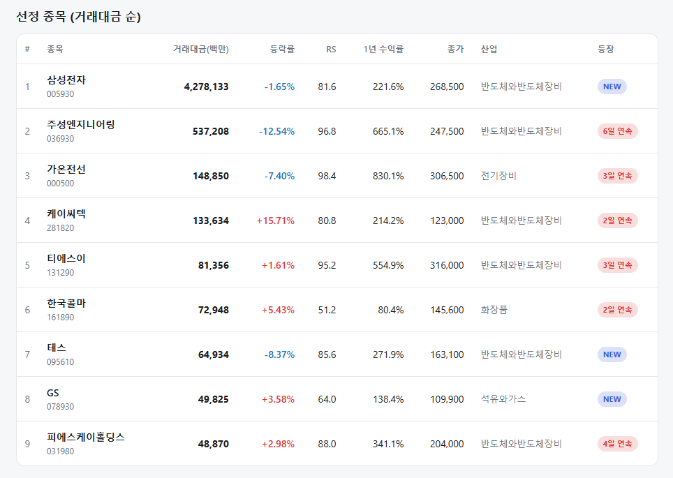
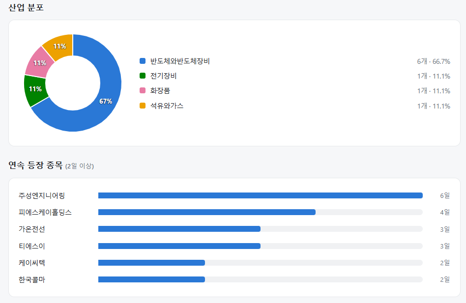
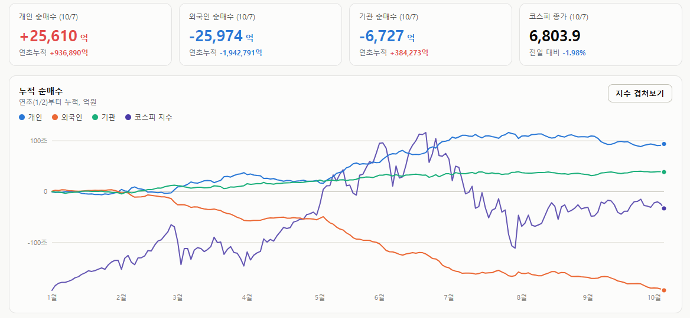

매일의 주도주 정리를 위해 기록합니다.
연속적으로 나온 종목들 또는 상승 후 조정받는 종목 위주로 리서치 해보시면 좋을 것 같습니다.


*오늘의 퀀트픽은 없습니다.
연속종목으로 주성엔지니어링(6일), 피에스케이홀딩스(4일) 출현했습니다.
어제 말씀드린대로 주성엔지니어링은 단기 고점 신호가 나온 상태입니다.
소부장 섹터는 전반적으로 오버슈팅한 종목들이 있어, 기간 조정을 거치면 좋은 매수 기회를 줄 것 같습니다.
#주도섹터
미디어·엔터 및 화장품
주요 업종 및 종목: 방송과엔터테인먼트(+3.76%), 화장품(+3.74%), 도로와철도운송(+2.97%), 하이브, 제이투케이바이오.
분석: 방송과엔터테인먼트, 화장품 업종이 나란히 3.7%대 강세를 보이며 업종 상승을 주도했습니다. 코스닥 급락 국면에서 달러 강세 수혜와 낙폭 과대 매력이 부각된 소비재 섹터로 반발 매수세가 집중되었습니다.
고RS 반도체 공정 장비 및 전자부품
주요 종목: 케이씨텍(+15.71%), 삼화콘덴서(+10.53%), 피에스케이홀딩스(+2.98%), 주성엔지니어링(-12.54%), 가온전선(-7.40%).
분석: 삼성전자가 -0.92%, SK하이닉스가 -2.71% 하락하며 지수를 짓눌렀으나, 케이씨텍(RS 80.8, 2일 연속)과 삼화콘덴서(RS 88.4, 거래대금 2,133억 원)가 두 자릿수 급등세를 보였습니다. 반면 주성엔지니어링(RS 96.8)과 가온전선(RS 98.4)은 시장 급락에 연동되어 큰 폭으로 조정을 받았습니다.
#조정섹터
2차전지, 자동차, 조선 및 금융
주요 업종 및 종목: 전자제품(-9.52%), 전기장비(-5.29%), 항공화물운송과물류(-4.88%), 우주항공과국방(-4.33%), HD현대중공업(-4.76%), 한화에어로스페이스(-3.91%), 현대차(-3.30%), 삼성SDI(-2.09%).
분석: 전자제품(-9.52%) 업종(LG전자 등)이 가장 큰 폭으로 하락했습니다. 전일 강세를 보였던 2차전지(삼성SDI), 자동차(현대차), 조선(HD현대중공업) 등 기존 주도 섹터에서 전방위적인 차익 실현이 나타났습니다.
#수급동향

코스피 지수는 -1.98% 급락한 6,803.90으로 마감하며 6,800선을 턱걸이했습니다. 코스닥 지수는 전일의 과열을 되돌리며 -2.34% 급락한 898.43을 기록해 900선 안착에 실패했습니다.
유가증권시장에서 외국인 투자자는 2조 5,954억 원(20일 누적 -24조 417억 원)을 순매도하며 매도 공세를 이어갔고, 기관 투자자도 6,727억 원(20일 누적 +4조 5,345억 원)을 순매도했습니다. 반면 개인 투자자가 2조 5,610억 원(20일 누적 -11조 1,762억 원)을 순매수하며 외인과 기관의 3.26조 원 규모 동반 매물 폭탄을 홀로 받아냈습니다. 외인·기관 합산 매도 물량에서 개인 매수분을 제외한 약 7,071억 원의 공백은 전일에 이어 기타법인 자사주 매입으로 소화되며 6,800선의 마지노선을 지지한 것으로 산출됩니다.
실적과 주주환원, 내일 삼성전자가 답해야 할 두 질문
코스피가 6,803.90(-1.98%), 코스닥이 898.43(-2.34%)로 마감했습니다. 간밤 미국은 달랐습니다. 프랑스 대선 후보 르펜의 재정 개선안에 10년물이 5.2%대로 진정됐고, 마벨이 FY31 매출 300억 달러 전망을 내놓으며 AI 칩 수요 자신감을 보이자 S&P500과 나스닥은 사상 최고가였습니다. 한국은 반대로 갔습니다.
① 반도체 안에서 갈린 희비
미국 반도체가 한 방향이 아니었습니다. 마벨 같은 AI 칩 설계는 올랐지만 마이크론(-1.7%)과 ASML(-1.4%), 즉 메모리와 장비는 빠졌습니다. 코스피는 후자에 연결돼 있습니다. 외국인이 현물과 선물을 함께 팔면서 대형주가 장 후반으로 갈수록 낙폭을 키웠고, 코스닥은 소부장이 앞장서 밀렸습니다(주성엔지니어링 -11.1%, 원익IPS -7.2%).
② 실적 시즌의 첫 교훈 — LG전자
LG전자는 영업이익 7,818억 원(+13.5%)으로 처음으로 3분기 누적 4조 원을 넘겼는데, 주가는 10.5% 급락했습니다. 기대에는 못 미쳤기 때문입니다. 앞서 엔비디아 글에서 다룬 "셀온의 법칙"이 국내에서 재현된 겁니다. 반면 수출 호조가 확인된 화장품(에이피알 +5.0%, 아모레퍼시픽 +4.0%)은 강했습니다.
③ 내일, 삼성전자
두 가지가 겹쳐 있습니다.
첫째, 실적입니다. 분기 영업이익 100조 원 달성이 전망되는 첫 실적입니다. 다만 LG전자가 보여줬듯, 100조를 넘느냐보다 컨센서스(약 107조)를 넘느냐, 4분기·2027년 가이던스가 상향되느냐가 관건입니다. "삼성·SK하이닉스가 2027년 가시성을 보여주느냐"가 사이클주 꼬리표를 떼는 조건이라 보는데, 내일이 그 첫 시험입니다.
둘째, 주주환원입니다. 8월 24일부터 이어진 15조 원 자사주 매입이 어제 끝났습니다. 매입이 끝나는 순간 구조적 매수세가 사라지는데, 오늘 삼성전자 -1.3%가 그 첫날입니다. 그래서 내일 추가 환원책이 나오느냐가 중요합니다. 3분기 30조 원 현금배당은 예고됐고, 자사주 매입·소각 배분이 함께 발표되면 공백을 메울 수 있습니다.
코스피는 7월 급락 이후 두 달째 6,800~7,100 사이에서 방향을 못 잡고 있습니다. 미국이 신고가를 가는 동안 한국이 수렴하는 이유는 메모리·장비에 대한 의심이 아직 안 풀렸기 때문입니다. 그 의심을 풀 수 있는 건 숫자이고, 내일 삼성전자가 첫 답을 냅니다.
오늘 하루도 수고하셨습니다!